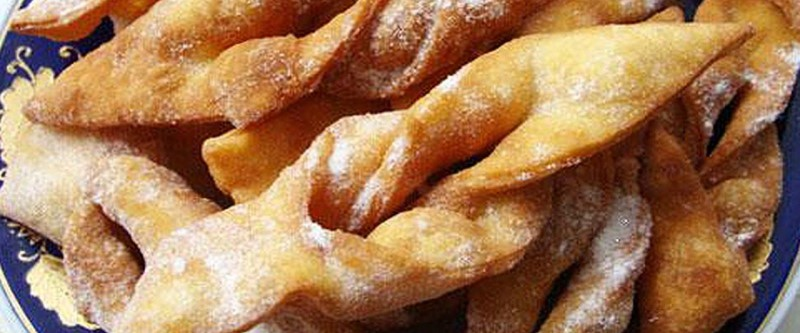

Хворост

0,5 стакана молока, 1 ст.л. сметаны, 3 желтка, 1 ст.л. сахара, щепотку соли и 2 ст.л. коньяка смешать. В смесь постепенно добавить 2,5 стакана муки и замесить крутое тесто.
Тесто раскатать тонким слоем, нарезать полосками шириной 3-4 см и длиной 10-12 см. По центру каждой полоски сделать надрез, через который вывернуть ее. Обжаривать до золотистости на подсолнечном масле. Готовые выложить на бумагу, чтобы впитался лишний жир и посыпать сверху сахарной пудрой или корицей.